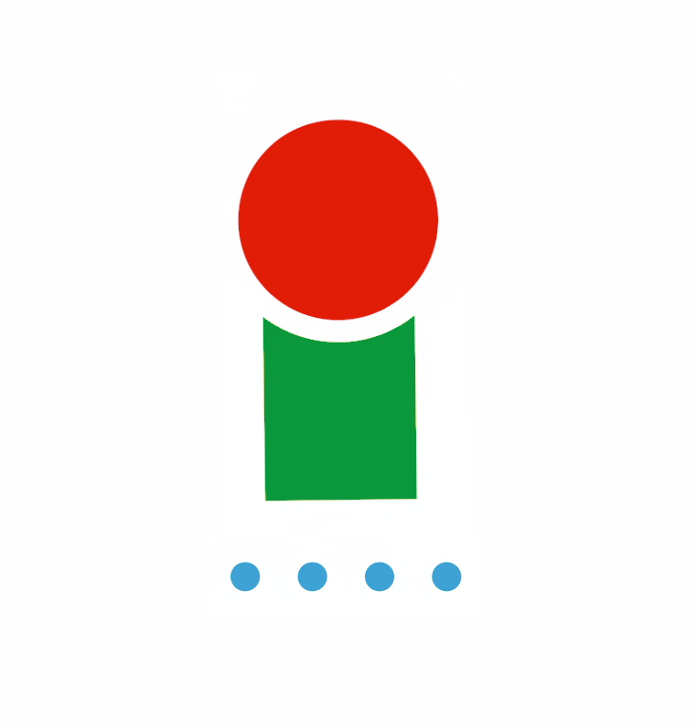

Government data feeds
181

Information about elected officials — how they vote, who funds them, what bills they sponsor, which lobbyists meet with them — is already public. It's just scattered across dozens of government websites, each in its own format. A citizen who wants a clear picture of their representative has to become a researcher. CIV.IQ fixes that: enter a home address, and it pulls records from every major federal source, matches the same people across them, and presents one clear civic record in plain language. No editorializing. No ads. No signups.
Most civic tech is either expensive enterprise software — Quorum, FiscalNote — built for lobbyists, not citizens; or single-issue dashboards that go dark when the grant ends. CIV.IQ is built as infrastructure: a canonical, open layer others can build on.
The analogy: Wikipedia for civic data. One good, public, permanent record. Intentionally non-commercial. No subscriptions. No paywall. No ads.
Mark Sandford. Twenty years thinking about civic data infrastructure; CIV.IQ is the expression of that vision — writing the code, designing the product, doing the research. Platform costs (≈$150/mo for AI + hosting) have been covered out of pocket.
The federal layer is solid. The two biggest remaining gaps: state-level coverage (all 50 state legislatures to federal parity) and Spanish-language access (42M+ Spanish speakers currently outside the plain-language layer).